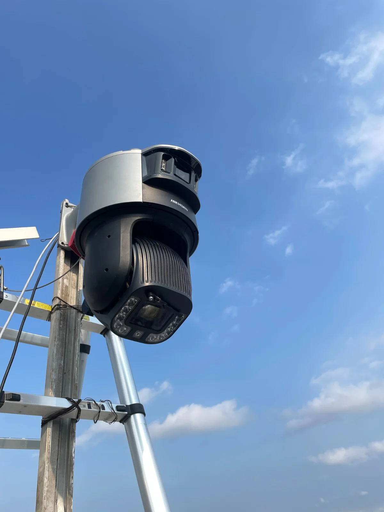
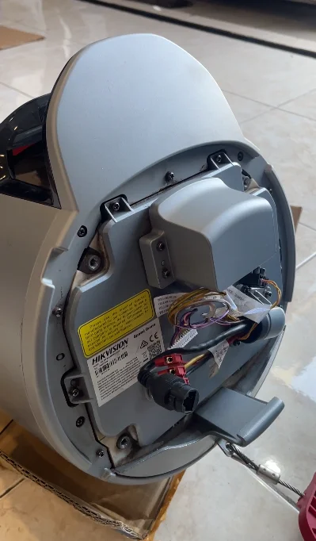
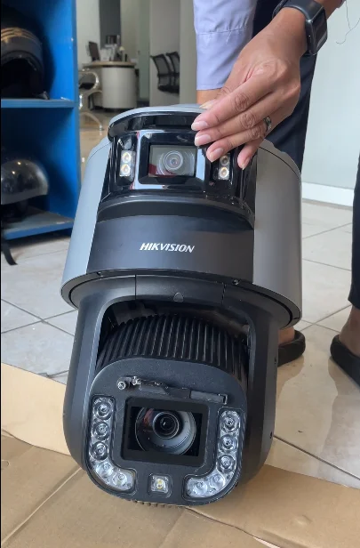
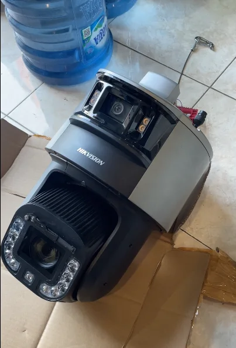
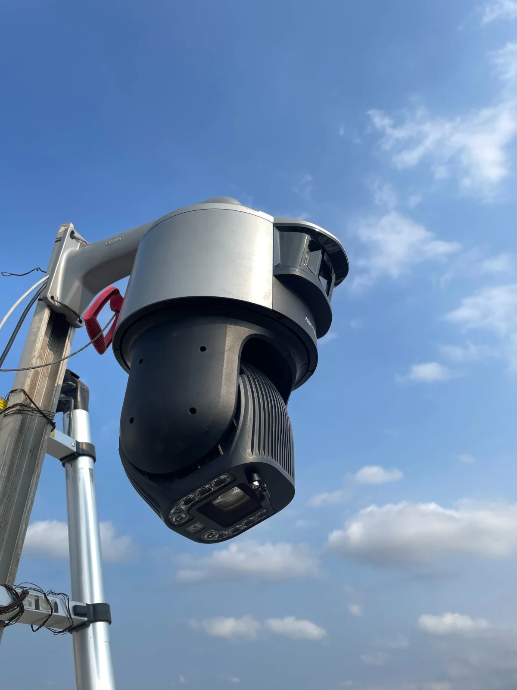

Portofolio Solusi CCTV dan Pengawasan Pertambangan
Dokumentasi penerapan langsung perangkat surveilans Hikvision di site pertambangan, mulai dari tahap pre-commissioning unit, terminasi kabel industrial, perakitan tiang menara mandiri solar 4G, hingga pengawasan operasional pit aktif.




